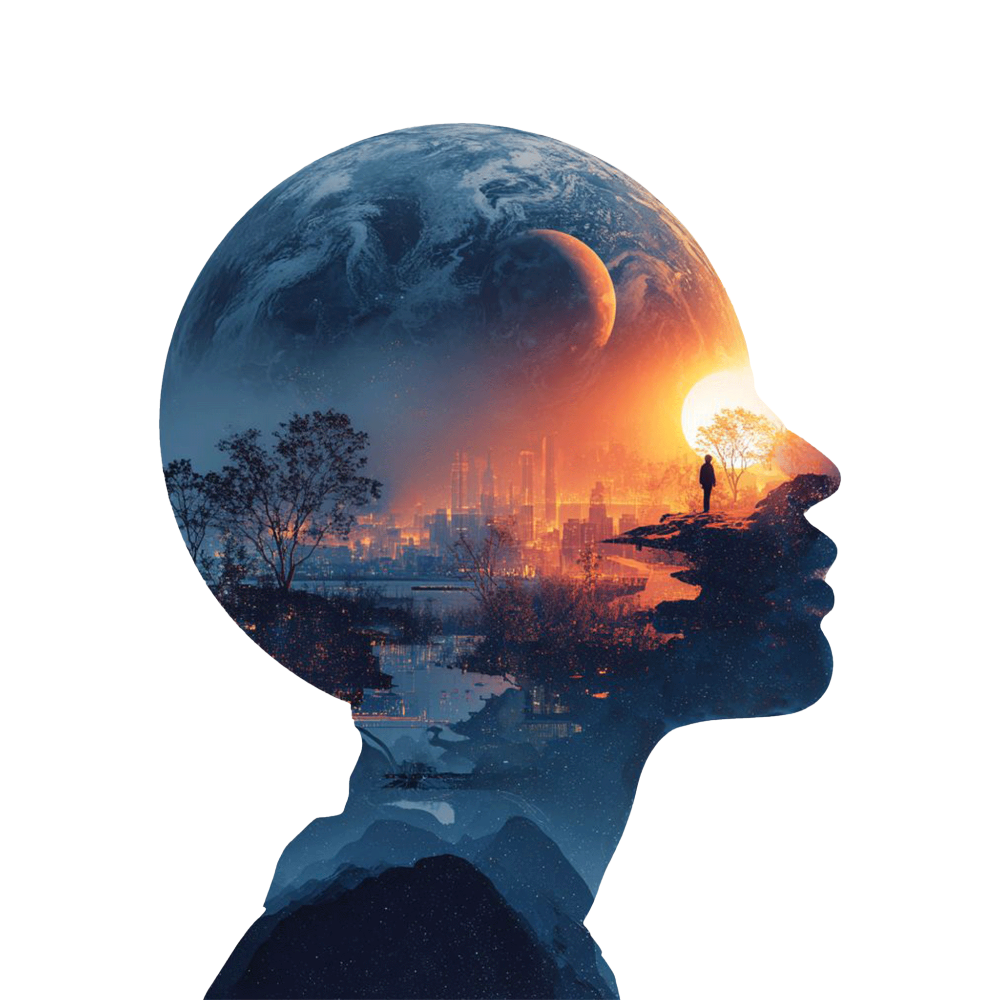
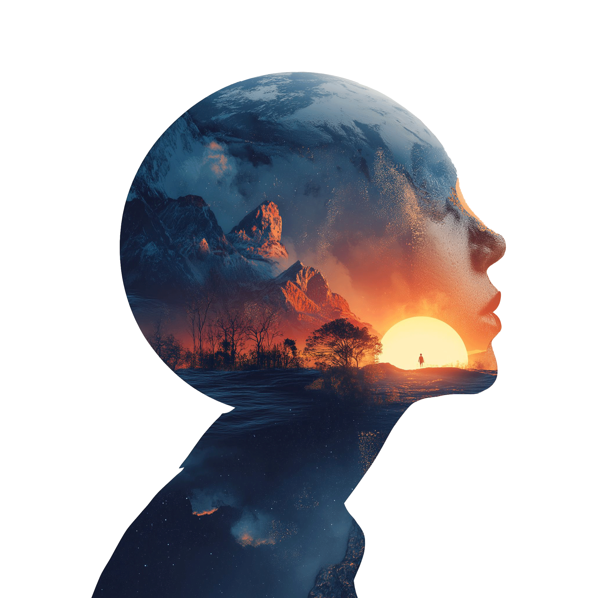

?
Problem 01
不同城市如何保持可辨识？
四座城市具有不同的地理、文化和建筑语境。如果只使用统一风格生成，城市差异会被抹平。
为跨纽约、伦敦、约翰内斯堡、利雅得四城市联动会议构建 AIGC 视觉系统。通过可复用 Prompt 模板，在不同城市语境下生成具有统一视觉调性、地域差异与未来感叙事的会议视觉资产。
四座城市具有不同的地理、文化和建筑语境。如果只使用统一风格生成，城市差异会被抹平。
每张图都重新写 Prompt，会导致构图、材质、光照、色调和未来感强度发生漂移。
纯文本生成容易出现语义不稳定、空间层次失控、画面重点漂移等问题。
官网横幅、宣传视频、社媒传播图和现场大屏对画幅、细节和信息密度要求不同。
将每座城市拆解为可替换变量：天际线、地貌、气候、基础设施、文化符号和空间尺度。
使用统一结构组织 Prompt：风格框架、城市变量、地理变量、文化符号和媒介约束。
通过参考图权重、风格描述、构图约束和人工后期修正，控制画面层次与未来感表达。
适配为官网 Banner、视频关键帧、社媒竖图或方图，以及会议现场大屏背景。
第一组视觉以未来城市为核心，将不同城市的地标、天际线、基础设施和城市尺度转化为统一的会议主视觉语言。
强调高密度城市峡谷、垂直天际线和基础设施光流，形成高压、高速的未来都市感。
在历史城市轮廓中加入未来交通、反射材质与冷色光环境，平衡古典城市与未来科技。

将非洲城市地貌、开阔尺度与未来基础设施结合，营造具有地域感的 Afrofuturism 叙事。

结合沙漠、绿洲、现代塔楼和未来城市基础设施，形成沙漠现代主义的视觉方向。
第二组视觉使用前后对比的方式展示城市语义迁移：左侧保留自然、地理或文化基底，右侧将其转译为未来城市、基础设施和科幻视觉系统。
将峡谷、都市密度与基础设施想象结合，形成类似城市峡谷的未来空间叙事。
从欧洲田园和历史城市意象出发，转译为未来化的都会结构与光环境。
将草原、开阔地貌与未来基础设施结合，构建具有地域识别度的非洲未来主义视觉。
从沙漠、绿洲与现代城市意象出发，生成具有高温、反射和未来都市感的视觉系统。
除城市环境外，项目也探索了不同媒介中的视觉延展方式。通过统一视觉系统，图像可以适配官网、社媒、视频和现场屏幕等多个触点。
设定基础人物面部比例、视觉调性和角色身份，为后续城市与种族变化提供统一底稿。

将人物与未来城市语境结合，强调科技感、会议品牌气质与全球城市网络。

将人物视觉与地貌、自然环境和区域特征结合，用于扩展会议的全球叙事维度。
将角色视觉与城市主视觉并置，形成从人物、场景到传播图像的完整视觉系统。